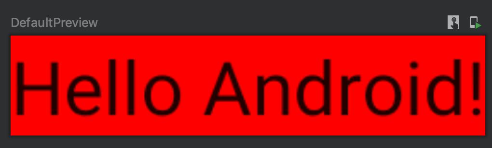
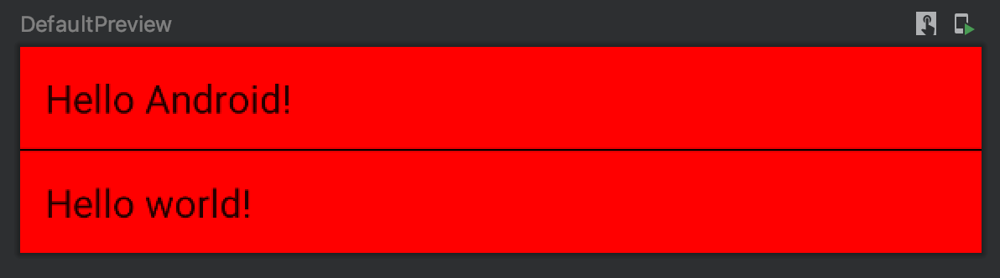
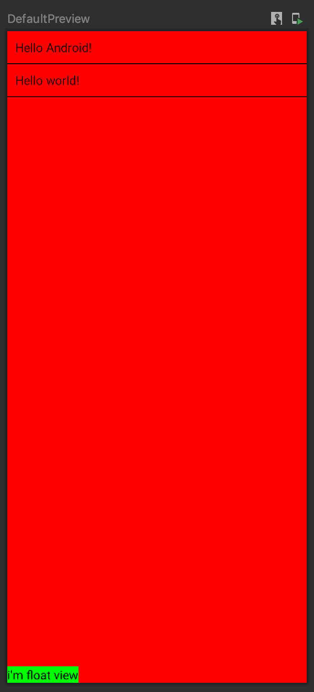
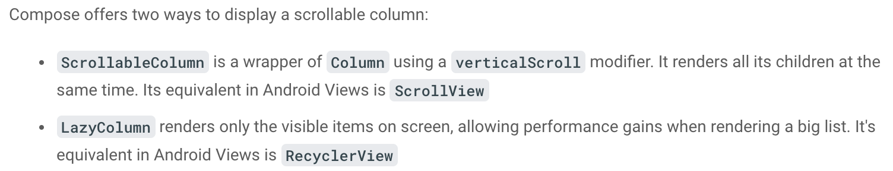
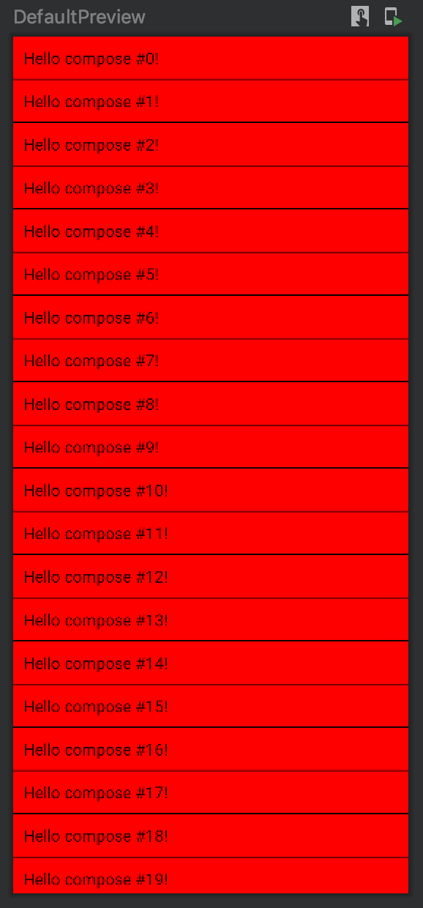

Jetpack Compose 1
[TOC]
Jetpack Compose 是用于构建原生界面的新款 Android 工具包。它可简化并加快 Android 上的界面开发。使用更少的代码、强大的工具和直观的 Kotlin API，快速让应用生动而精彩
需要 android studio canary 版本, 下载最新版本 android studio
创建 Compose 项目
创建 Demo
File > New > New Project > Empty Compose Activity
app/build.gradle 内容如下
android {
...
kotlinOptions {
jvmTarget = '1.8'
useIR = true
}
buildFeatures {
compose true
}
composeOptions {
kotlinCompilerExtensionVersion "${compose_version}"
}
}
dependencies {
...
implementation "androidx.compose.ui:ui:$compose_version"
implementation "androidx.activity:activity-compose:1.3.0-alpha03"
implementation "androidx.compose.material:material:$compose_version"
implementation "androidx.compose.ui:ui-tooling:$compose_version"
...
}
build.gradle 内容如下
buildscript {
ext {
compose_version = '1.0.0-beta03'
}
ext.kotlin_version = "1.4.31"
...
}
已有工程使用 Jetpack Compose
- 确保您在项目中使用的是 Kotlin 1.4.21 或更高版本
plugins {
id 'org.jetbrains.kotlin.android' version '1.4.21'
}
- 应用的最低 API 级别设置为 21 或更高级别
- 在
build.gradle中启用 Jetpack Compose, - 设置 Kotlin 编译器插件的版本
android {
defaultConfig {
...
minSdkVersion 21
}
buildFeatures {
// Enables Jetpack Compose for this module
compose true
}
...
// Set both the Java and Kotlin compilers to target Java 8.
compileOptions {
sourceCompatibility JavaVersion.VERSION_1_8
targetCompatibility JavaVersion.VERSION_1_8
}
kotlinOptions {
jvmTarget = "1.8"
useIR = true
}
composeOptions {
kotlinCompilerVersion '1.4.21'
kotlinCompilerExtensionVersion '1.0.0-alpha10'
}
}
- 添加 Jetpack Compose 工具包依赖项
dependencies {
implementation 'androidx.compose.ui:ui:1.0.0-alpha10'
// Tooling support (Previews, etc.)
implementation 'androidx.compose.ui:ui-tooling:1.0.0-alpha10'
// Foundation (Border, Background, Box, Image, Scroll, shapes, animations, etc.)
implementation 'androidx.compose.foundation:foundation:1.0.0-alpha10'
// Material Design
implementation 'androidx.compose.material:material:1.0.0-alpha10'
// Material design icons
implementation 'androidx.compose.material:material-icons-core:1.0.0-alpha10'
implementation 'androidx.compose.material:material-icons-extended:1.0.0-alpha10'
// Integration with observables
implementation 'androidx.compose.runtime:runtime-livedata:1.0.0-alpha10'
implementation 'androidx.compose.runtime:runtime-rxjava2:1.0.0-alpha10'
// UI Tests
androidTestImplementation 'androidx.compose.ui:ui-test-junit4:1.0.0-alpha10'
}
Compose UI 之 Hello world
class MainActivity : ComponentActivity() {
override fun onCreate(savedInstanceState: Bundle?) {
super.onCreate(savedInstanceState)
setContent {
Greeting("Android")
}
}
}
@Composable
fun Greeting(name: String) {
Text(text = "Hello $name!")
}
@Preview(showBackground = true)
@Composable
fun DefaultPreview() {
Compose2Theme {
Greeting("Android")
}
}
Composable functions(可组合函数)
Jetpack Compose 是围绕可组合函数构建的，只需描述应用界面的形状和数据依赖关系，而不必关注界面的构建过程。
Composable functions(可组合函数) 是带有 @Composable 注解的常规 Kotlin 函数，可以调用其他的 @Composable 函数
Preview
在 xml 布局中，可以通过 Split 或 Design可以预览 UI 效果
在 Jetpack Compose 中，通过 @Preview 注解修饰在可组合函数上，查看预览
声明式 UI
如果想给 Greeting 设置背景色，需要定义 Surface 包裹它；嵌套在 Surface 内部的组件将绘制在该背景颜色上
@Composable
fun Greeting(name: String) {
// 定义了红色背景
Surface(color = Color.RED) {
Text(text = "Hello $name!")
}
}

Modifiers
modifiers 参数告诉 UI 元素如何在其父布局中布局、显示或行为, 大多数组合 UI 元素(如 Surface 和 Text)都接受一个可选的修饰符参数
padding 修饰符将设置 view 的边距
@Composable
fun Greeting(name: String) {
Surface(color = Color.Red) {
Text(text = "Hello $name!", modifier = Modifier.padding(10.dp))
}
}

Compose Reusability
可重用性：声明为顶级函数，确保可重用
@Composable注解应修饰在绘制 UI 或调用其他可组合函数的函数上；如果一个函数不满足这些要求，那么不应该用@Composable修饰
创建可组合函数的容器
相当于创建 viewGroup
定义一个可组合函数，该函数以返回 Unit 的可组合函数作为参数;
返回 Unit 的原因：可组合函数不返回 UI 组件，而是绘制组件。所以返回值为 Unit
@Composable
fun MyApp(content: @Composable () -> Unit) {
Surface(color = Color.Red) {
content()
}
}
参数是函数，是可组合函数，用
@Composable修饰
尾随 lambda (kotlin trailing lambda syntax)
当参数为函数参数列表最后一项时，可以将传递参数写成方法体形式
class MainActivity : AppCompatActivity() {
override fun onCreate(savedInstanceState: Bundle?) {
super.onCreate(savedInstanceState)
setContent {
// 下面两句同义
// MyApp({ Greeting("Android")} )
MyApp {
Greeting("Android")
}
}
}
}
Layout
Divider
Divider 是一个提供的可组合函数，用于创建水平分隔符
Column
Column 是垂直排列可组合函数；类似于 LinearLayout 垂直排列
@Composable
fun MyScreenContent() {
Column {
Greeting("Android")
Divider(color = Color.Black)
Greeting("world")
}
}

Row
Row 水平布局；类似于 LinearLayout 水平排列
布局排列
描述：列表充满屏幕，一个按钮悬浮位于屏幕底部切悬浮在列表之上
@Composable
fun MyScreenContent(names: List<String> = listOf("Android", "world")) {
Column(modifier = Modifier.fillMaxHeight()) {
Column(modifier = Modifier.weight(1f)) {
for (name in names) {
Greeting(name = name)
Divider(color = Color.Black)
}
}
Text(
text = "i'm float view",
modifier = Modifier.background(color = Color.Green),
color = Color.Black
)
}
}
Modifier.fillMaxHeight() 充满屏幕高度；
同理 fillMaxWidth() 是充满屏幕宽度；
weight 是权重

可滑动布局
开发中常用的列表数据展示用 RecyclerView ，有些情况下用 ScrollView;
在 Jetpack Compose 中，推荐两个可组合函数（Composable Funcations);
ScrollableColumn同时渲染所有的子元素，相当于ScrollView，垂直滑动并包裹ColumnLazyColumn只渲染屏幕上可见的项目，渲染大量列表数据时有性能提升；相当于RecyclerView
官方文档描述如下： 
@Composable
fun NameList(names: List<String>, modifier: Modifier = Modifier) {
LazyColumn(modifier = modifier) {
items(items = names) { name ->
Greeting(name = name)
Divider(color = Color.Black)
}
}
}
@Preview
@Composable
fun DefaultPreview() {
Surface(color = Color.Red) {
NameList(names = List(500){"compose #$it"})
}
}

Compose 编程思想
- 声明性编程范式
- 可组合函数
- 带有
@Composable注解。所有可组合函数必须带有此注解，旨在将数据转换为界面 - 接受数据
- 可以在界面中显示 UI
- 无返回值；执行 Compose 函数不需要返回任何内容，因为它们描述所需的屏幕状态，而不是创建界面元素
- 带有
重组
用户与界面元素进行了交互，导致触发一个事件。应用逻辑响应该事件，然后系统根据需要使用新参数自动再次调用可组合函数。这会导致重新绘制界面元素，此过程称为重组。如 onClick 事件
@Composable
fun ClickCounter(clicks: Int, onClick: () -> Unit) {
Button(onClick = onClick) {
Text("I've been clicked $clicks times")
}
}
每次点击该按钮时，调用方都会更新 clicks 的值。Compose 会再次调用 lambda 与 Text 函数以显示新值；此过程称为重组。不依赖于该值的其他函数不会进行重组。
当 Compose 根据新输入重组时，它仅调用可能已更改的函数或 lambda，而跳过其余函数或 lambda。通过跳过所有未更改参数的函数或 lambda，Compose 可以高效地重组。
切勿依赖于执行可组合函数所产生的附带效应 危险的附带效应包括：
- 写入共享对象的属性
- 更新
ViewModel中的可观察项- 更新共享偏好设置
使用 Compose 注意事项：
- 可组合函数可以按任何顺序执行
- 可组合函数可以并行执行。
- 重组会跳过尽可能多的可组合函数和 lambda。
- 重组是乐观的操作，可能会被取消
- 可组合函数可能会像动画的每一帧一样非常频繁地运行
可组合函数可以按任何顺序执行
@Composable
fun ButtonRow() {
MyFancyNavigation {
StartScreen()
MiddleScreen()
EndScreen()
}
}
对 StartScreen、MiddleScreen 和 EndScreen 的调用可以按任何顺序进行。这意味着，举例来说，您不能让 StartScreen() 设置某个全局变量（附带效应）并让 MiddleScreen() 利用这项更改。相反，其中每个函数都需要保持独立。